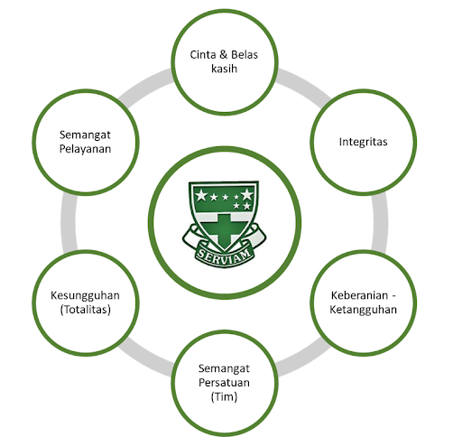
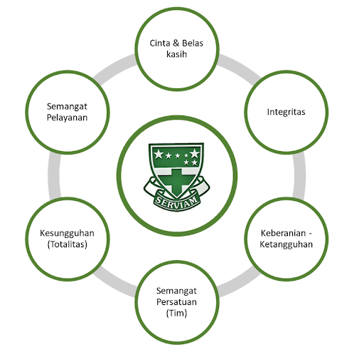

SOLUSI UNTUK MENINGKATKAN SDGS 4
Berdasarkan analisis yang telah saya lakukan mengenai kualitas pendidikan di Indonesia, tentunya ada berbagai solusi yang bisa ditangani yang dapat dikaitkan dengan nilai-nilai serviam.
- Dari pemerintah. Di Indonesia masih ada berbagai sekolah yang memiliki infrastruktur maupun fasilitas yang belum lengkap ataupun yang memadai. Maka dari itu, menurut saya pemerintah dapat memberikan anggaran ataupun tenaga kerja untuk membantu membangun dan melengkapkan fasilitas yang dibutuhkan oleh setiap sekolah. Contohnya adalah seperti perpustakaan, ruang kelas (papan tulis, kursi dan meja, ventilasi, dan pencahayaan), ruang guru, ruang kepala sekolah, lapangan olahraga, dan laboratorium (IPA dan TIK). Selain dari itu, menurut saya pemerintah juga dapat meningkatkan program pelatihan guru untuk meningkatkan pengembangan dan wawasan guru untuk mengajar dan membantu murid yang mengalami kesulitan. Juga, pemerintah dapat memberikan dorongan atau insentif yang kuat untuk menarik perhatian para guru di daerah-daerah terpencil supaya mereka dapat meningkatkan wawasan pendidikan.
- Dari masyarakat. Seperti yang sudah dikatakan sebelumnya, peran masyarakat tentu mempunyai suara yang kuat untuk mewujudkan kualitas pendidikan yang optimal di Indonesia. Contohnya adalah seperti mengadakan les/ajaran tambahan, anggaran dana, program webinar yang menyenangkan dan seru sehingga membuat para siswa tertarik untuk belajar dan bertambah ilmu, gotong royong untuk membangun sekolah ataupun fasilitas yang dibutuhkan, serta para orang tua dapat membantu anak mereka dengan memotivasikan mereka untuk belajar ataupun memberikan semangat serta dorongan.
Solusi-solusi tersebut tentunya ada kaitannya dengan nilai Serviam. Yaitu cinta dan belas kasih, totalitas, persatuan, dan pelayanan. Cinta dan belas kasih dapat dilihat bahwa solusi-solusi ini dilakukan karena peduli terhadap setiap anak di Indonesia yang tidak memiliki kesempatan untuk mendapatkan pendidikan yang layak maupun para siswa yang masih belum mendapatkan pendidikan yang optimal. Selain dari itu, totalitas dapat dilihat bahwa program-program ini dilaksanakan dengan penuh kerja keras dan sungguh-sungguh untuk mewujudkan pendidikan yang berkualitas di Indonesia. Juga, persatuan dapat dilihat bahwa tentunya solusi-solusi/program-program tersebut tidak dilakukan oleh seorang individu, melainkan bersama-sama untuk saling berpendapat dan membantu untuk mencapai kualitas pendidikan yang optimal. Terakhir, pelayanan dapat dilihat bahwa segala solusi ini dilakukan untuk membantu para siswa di Indonesia mencapai ilmu dan pendidikan yang layak sehingga dapat mencapai masa depan yang sejahtera bagi mereka maupun Indonesia.